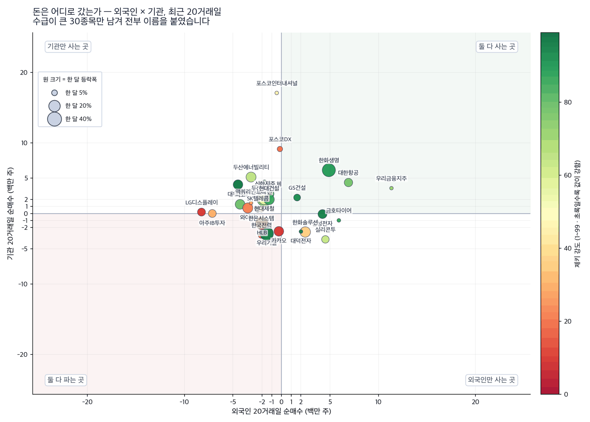
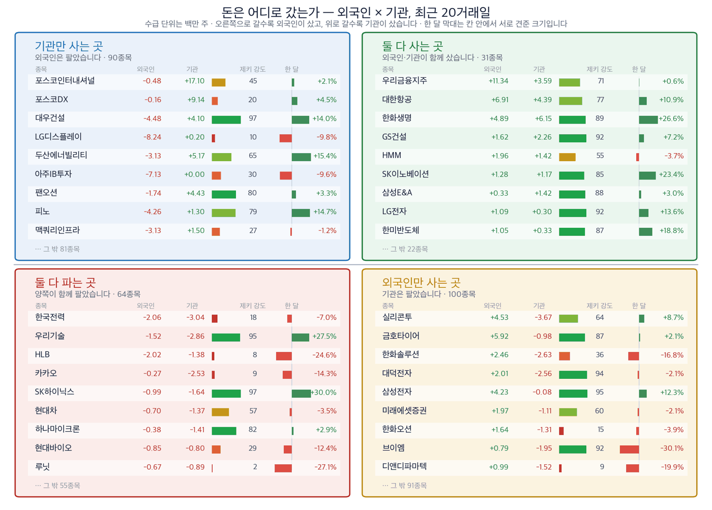

오늘 다이제스트가 늦었습니다. 양해를 구합니다. 여기 실린 종목은 저희 보유분이 아니라 기사에서 찾은 후보입니다.
정유주는 하루 만에 되돌렸고, 반도체는 버텼습니다
ZekiRex™ 신문 다이제스트 · 2026년 9월 10일 (목)
종가는 모두 9월 10일(목) 기준입니다
종가는 모두 9월 10일(목) 기준입니다
먼저, 이번 주 경제
오늘 지면을 관통한 한 가지
오늘 아침 신문은 두 가지를 나란히 실었습니다. 하나는 국제 유가가 배럴당 100달러를 넘었다는 소식입니다. 다른 하나는 코스피가 48일 만에 7000선을 되찾았다는 소식입니다.
둘은 방향이 반대입니다. 유가가 오르면 기업의 원가가 오릅니다. 보통은 주가에 나쁜 소식입니다. 그런데 지수는 올랐습니다.
오늘 장이 그 답을 냈습니다. 유가 덕에 올랐던 정유주가 되돌렸고, 반도체가 자리를 지켰습니다. 코스피는 7000선을 지켰습니다.
둘은 방향이 반대입니다. 유가가 오르면 기업의 원가가 오릅니다. 보통은 주가에 나쁜 소식입니다. 그런데 지수는 올랐습니다.
오늘 장이 그 답을 냈습니다. 유가 덕에 올랐던 정유주가 되돌렸고, 반도체가 자리를 지켰습니다. 코스피는 7000선을 지켰습니다.
코스피 7,033.92 | 코스닥 836.92 | 브렌트유 101달러 | 미 국채 10년 4.83% |

이 그림 읽는 법
| 켜진 등 | 오늘의 국면입니다. 초록은 매수 우위, 노랑은 관망, 빨강은 매수 자제입니다. |
| 채워진 칸 | 7가지 조건 중 몇 개를 통과했는지입니다. 칸이 많이 찰수록 시장 구조가 튼튼합니다. |
| 칸이 다 찼는데 노랑·빨강이면 | 다른 이유로 한 단계 낮춘 것입니다. 그림 아래에 그 이유를 적었습니다. |
저희는 시장 국면을 제키 신호등으로 나눕니다. 7가지 조건 중 몇 가지를 통과했는지로 정합니다. 초록불은 매수 우위, 노란불은 관망, 빨간불은 매수 자제입니다.
오늘 코스피는 노란불이고 코스닥은 빨간불입니다. 아래 종목은 모두 코스피에 있습니다. 다만 노란불이므로 한 종목에 크게 걸지 않습니다.
오늘 코스피는 노란불이고 코스닥은 빨간불입니다. 아래 종목은 모두 코스피에 있습니다. 다만 노란불이므로 한 종목에 크게 걸지 않습니다.
실행 요약 — 지금 할 일
결론부터
오늘 가장 확실한 것
전기를 나르는 회사가 먼저 올랐습니다. 데이터센터가 늘면 전력망부터 바꿔야 합니다. 가온전선(000500)은 한 달 +59.0%, 제키 강도 99입니다. 외국인과 기관이 20거래일 동안 함께 사들였습니다. 저희 4가지 조건을 모두 채운 종목입니다.
반도체 장비가 그 다음 차례입니다. 오픈AI의 새 모델은 그래픽 장치만 쓰지 않습니다. 메모리와 저장장치까지 함께 씁니다. 그래서 메모리를 만드는 장비에 주문이 돕니다. 주성엔지니어링(036930)은 오늘 +7.02% 올랐고 제키 강도 98입니다.
정유는 조건을 다 채웠는데 오늘 반대로 갔습니다. 에쓰오일(010950)은 4가지를 모두 채웠습니다. 그런데 오늘 −6.63% 내렸습니다. 저희 조건은 한 달과 20거래일로 재기 때문에 하루는 들어가지 않습니다. 그 하루가 무엇이었는지는 아래에서 나눠 보겠습니다.
반도체 장비가 그 다음 차례입니다. 오픈AI의 새 모델은 그래픽 장치만 쓰지 않습니다. 메모리와 저장장치까지 함께 씁니다. 그래서 메모리를 만드는 장비에 주문이 돕니다. 주성엔지니어링(036930)은 오늘 +7.02% 올랐고 제키 강도 98입니다.
정유는 조건을 다 채웠는데 오늘 반대로 갔습니다. 에쓰오일(010950)은 4가지를 모두 채웠습니다. 그런데 오늘 −6.63% 내렸습니다. 저희 조건은 한 달과 20거래일로 재기 때문에 하루는 들어가지 않습니다. 그 하루가 무엇이었는지는 아래에서 나눠 보겠습니다.
근거 확실 2 근거 있음 5 확인 필요 3
왜 그런가 — 기사에서 찾은 종목
저희가 들고 있지 않은 이름입니다 — 테마 3개
제키 강도는 1에서 99까지의 값입니다. 저희가 값을 보는 국내 632종목 가운데 그 주가가 상위 몇 %에 있는지를 나타냅니다. 90이면 상위 10%입니다.
외국인 20일·기관 20일은 거래소가 공시한 최근 20거래일 순매수 주식 수입니다. 저희 계산이 아닙니다. 종목마다 마지막 기록일이 달라 기준일을 함께 적습니다.
외국인 20일·기관 20일은 거래소가 공시한 최근 20거래일 순매수 주식 수입니다. 저희 계산이 아닙니다. 종목마다 마지막 기록일이 달라 기준일을 함께 적습니다.
테마 1 — 데이터센터가 늘면 전선부터 바뀝니다
인공지능 데이터센터 이야기는 보통 반도체로 갑니다. 그런데 데이터센터는 전기를 먹습니다. 전기를 끌어오려면 송배전망과 케이블을 먼저 깔아야 합니다.
충남 당진에는 1조2000억원 규모 데이터센터가 들어섭니다. 미국에서도 같은 일이 벌어지고 있습니다.
전기장비는 저희 업종 순위에서 5위이고 A등급입니다. 업종이 통째로 오르고 있다는 뜻입니다.
충남 당진에는 1조2000억원 규모 데이터센터가 들어섭니다. 미국에서도 같은 일이 벌어지고 있습니다.
전기장비는 저희 업종 순위에서 5위이고 A등급입니다. 업종이 통째로 오르고 있다는 뜻입니다.
테마 1 · 전력 인프라 — 전선
가온전선 (000500)
출처: 9월 10일자 한국경제·매일경제 · 시세는 저희 실측(9월 10일 종가)
| 종가 | 당일 | 한 달 | 석 달 | 제키 강도 | 52주 고점 대비 |
|---|---|---|---|---|---|
| 250,000원 | -5.84% | +59.0% | +38.9% | 99 | -20.2% |
| 누가 | 전선과 케이블을 만드는 회사입니다. LS그룹 계열입니다. |
| 무엇을 | 데이터센터와 송배전망에 들어가는 전력 케이블을 공급합니다. |
| 언제 | 한 달 +59.0%, 6개월 +368.6%입니다. 오늘은 −5.84% 내렸습니다. |
| 어디서 | 국내 전력망 교체 수요와 해외 데이터센터 발주가 함께 있습니다. |
| 왜 | 전기장비 업종이 A등급이고, 그 안에서 이 회사의 제키 강도가 가장 높습니다. |
| 어떻게 | 4가지를 모두 채웠습니다. 외국인이 20거래일 256,748주, 기관이 363,589주를 사들였습니다(9월 9일 기준). |
판단 — 근거 확실
값과 수급이 같은 방향입니다. 다만 이미 오른 뒤입니다. 한 달에 +59.0% 오른 종목은 되돌림도 큽니다.
값과 수급이 같은 방향입니다. 다만 이미 오른 뒤입니다. 한 달에 +59.0% 오른 종목은 되돌림도 큽니다.
확인 신호 — 9월 10일 종가 250,000원 위에서 마감이 이어지면 흐름이 유지됩니다.
철회 기준 — 제키 강도가 90 아래로 내려가거나, 기관 순매수가 매도로 돌아서면 제외합니다.
테마 2 — 새 인공지능은 그래픽 장치만 쓰지 않습니다
오픈AI가 내놓은 새 모델은 질문에 답만 하지 않습니다. 스스로 자료를 찾고 메일을 보내고 프로그램을 돌립니다.
그러면 쓰는 부품이 달라집니다. 그래픽 장치뿐 아니라 중앙처리장치와 메모리와 저장장치를 함께 씁니다. 메모리 주문이 늘면 메모리를 만드는 장비에 먼저 주문이 갑니다.
외국인은 9월 3일부터 삼성전자와 SK하이닉스를 4조원어치 넘게 사들였습니다. 장비 회사는 그 다음 차례입니다.
그러면 쓰는 부품이 달라집니다. 그래픽 장치뿐 아니라 중앙처리장치와 메모리와 저장장치를 함께 씁니다. 메모리 주문이 늘면 메모리를 만드는 장비에 먼저 주문이 갑니다.
외국인은 9월 3일부터 삼성전자와 SK하이닉스를 4조원어치 넘게 사들였습니다. 장비 회사는 그 다음 차례입니다.
테마 2 · 반도체 — 증착 장비
주성엔지니어링 (036930)
출처: 9월 10일자 한국경제 · 시세는 저희 실측(9월 10일 종가)
| 종가 | 당일 | 한 달 | 석 달 | 제키 강도 | 52주 고점 대비 |
|---|---|---|---|---|---|
| 221,000원 | +7.02% | +36.1% | -9.98% | 98 | -11.8% |
| 누가 | 반도체 증착 장비를 만드는 회사입니다. 웨이퍼에 얇은 막을 입히는 장비입니다. |
| 무엇을 | 메모리 생산이 늘면 장비 주문이 먼저 늘어납니다. |
| 언제 | 오늘 +7.02% 올랐습니다. 한 달로는 +36.1%입니다. |
| 어디서 | 국내 메모리 회사 두 곳이 주 고객입니다. |
| 왜 | 반도체와반도체장비 업종은 저희 순위 4위이고, 시가총액을 감안한 강도는 전 업종에서 가장 높습니다. |
| 어떻게 | 4가지 중 3가지를 채웠습니다. 외국인이 1,476,860주를 사들였고, 기관은 229,273주를 팔았습니다(9월 9일 기준). |
판단 — 근거 있음
모자란 하나는 기관 방향입니다. 오늘 오른 것은 좋지만, 하루 상승은 저희 조건에 들어가지 않습니다.
모자란 하나는 기관 방향입니다. 오늘 오른 것은 좋지만, 하루 상승은 저희 조건에 들어가지 않습니다.
확인 신호 — 기관이 20거래일 기준 순매수로 돌아서면 4가지를 다 채웁니다. 9월 10일 종가 221,000원 위를 지키는 것이 첫 관문입니다.
철회 기준 — 제키 강도가 90 아래로 내려가면 제외합니다.
테마 3 — 유가가 오르면 정유사는 오히려 법니다
후티반군이 사우디 남부와 아람코 시설을 공격했습니다. 홍해가 막힐 수 있다는 우려가 커졌습니다. 브렌트유는 장중 세 자릿수에 올라섰습니다.
원유값이 오르면 정유사도 원가가 오릅니다. 그런데 주가는 반대로 갔습니다. 정유사가 버는 것은 원유값이 아니라 원유와 석유제품의 값 차이입니다. 공급이 막혀 제품이 귀해지면 그 차이가 벌어집니다.
그런데 오늘은 그 기대가 한꺼번에 되돌려졌습니다. 석유와가스는 저희 업종 순위 1위인데도 그랬습니다.
원유값이 오르면 정유사도 원가가 오릅니다. 그런데 주가는 반대로 갔습니다. 정유사가 버는 것은 원유값이 아니라 원유와 석유제품의 값 차이입니다. 공급이 막혀 제품이 귀해지면 그 차이가 벌어집니다.
그런데 오늘은 그 기대가 한꺼번에 되돌려졌습니다. 석유와가스는 저희 업종 순위 1위인데도 그랬습니다.
테마 3 · 에너지 — 정제
에쓰오일 (010950)
출처: 9월 10일자 한국경제·매일경제 · 시세는 저희 실측(9월 10일 종가)
| 종가 | 당일 | 한 달 | 석 달 | 제키 강도 | 52주 고점 대비 |
|---|---|---|---|---|---|
| 154,900원 | -6.63% | +9.39% | +37.0% | 92 | -6.63% |
| 누가 | 국내 4대 정유사 중 하나입니다. |
| 무엇을 | 원유를 사서 휘발유와 경유로 바꿔 팝니다. |
| 언제 | 석 달 +37.0%로 이미 오르던 중이었습니다. 오늘은 −6.63% 내렸습니다. |
| 어디서 | 울산 정제소이고 제품은 국내와 수출로 나갑니다. |
| 왜 | 공급이 막히면 원가도 오르지만 제품값이 더 빨리 오릅니다. 정유사는 그 차이를 가져갑니다. |
| 어떻게 | 4가지를 모두 채웠습니다. 외국인이 52,437주, 기관이 584,379주를 사들였습니다(9월 9일 기준). |
판단 — 근거 확실
조건은 다 채웠지만 오늘 하루는 반대로 갔습니다. 등급은 한 달과 20거래일로 세어 나온 값입니다. 오늘의 하락은 아직 거기 들어가지 않았습니다. 이 어긋남이 이 종목의 관전 지점입니다.
조건은 다 채웠지만 오늘 하루는 반대로 갔습니다. 등급은 한 달과 20거래일로 세어 나온 값입니다. 오늘의 하락은 아직 거기 들어가지 않았습니다. 이 어긋남이 이 종목의 관전 지점입니다.
확인 신호 — 9월 10일 종가 154,900원을 되찾으면 이날의 하락이 하루짜리였다는 뜻이 됩니다.
철회 기준 — 브렌트유가 90달러 아래로 내려가면 이 이야기의 전제가 사라집니다. 90달러는 이번 급등 직전 수준입니다.
제외 — 조선. 오늘 가장 크게 다뤄진 소식입니다. 한화오션이 태국 호위함 사업자로 뽑혔고 계약은 6,833억원입니다. 핵추진잠수함 협의도 시작됐습니다. 그런데 값이 없습니다. 조선 6종목의 제키 강도는 6에서 30 사이입니다. 오늘도 모두 내렸습니다. 수주 소식이 주가를 되돌리지 못하고 있습니다.
제외 — 연료전지. 두산퓨얼셀은 일주일 새 39% 올랐습니다. 미국 데이터센터 납품 계약이 이유입니다. 그런데 오늘 −7.05% 내렸고 석 달로는 −28.9%입니다. 외국인은 20거래일 동안 1,791,122주를 팔았습니다. 저희 기준으로는 아직 확인 필요입니다.
제외 — 연료전지. 두산퓨얼셀은 일주일 새 39% 올랐습니다. 미국 데이터센터 납품 계약이 이유입니다. 그런데 오늘 −7.05% 내렸고 석 달로는 −28.9%입니다. 외국인은 20거래일 동안 1,791,122주를 팔았습니다. 저희 기준으로는 아직 확인 필요입니다.
오늘 찾은 것, 한 장으로
테마 3개의 결론
근거의 무게는 4가지를 세어 정합니다. ① 최근 한 달 주가가 올랐는가 ② 제키 강도가 90 이상인가 ③ 외국인이 20거래일 순매수인가 ④ 기관이 20거래일 순매수인가.
4가지를 다 채우면 근거 확실, 3가지면 근거 있음, 2가지 이하면 확인 필요입니다. 등급은 세어서 나오는 값입니다.
4가지를 다 채우면 근거 확실, 3가지면 근거 있음, 2가지 이하면 확인 필요입니다. 등급은 세어서 나오는 값입니다.
| 종목 | ①값이 올랐나 | ②강도 90↑ | ③외국인 순매수 | ④기관 순매수 | 충족 | 근거의 무게 |
|---|---|---|---|---|---|---|
| 가온전선 (000500) | O | O | O | O | 4/4 | 근거 확실 |
| S-Oil (010950) | O | O | O | O | 4/4 | 근거 확실 |
| 주성엔지니어링 (036930) | O | O | O | X | 3/4 | 근거 있음 |
| RF머트리얼즈 (327260) | O | O | X | O | 3/4 | 근거 있음 |
| LS일렉트릭 (010120) | O | O | O | X | 3/4 | 근거 있음 |
| SK이노베이션 (096770) | O | X | O | O | 3/4 | 근거 있음 |
| 한미반도체 (042700) | O | X | O | O | 3/4 | 근거 있음 |
| 두산퓨얼셀 (336260) | O | X | X | O | 2/4 | 확인 필요 |
| 한화오션 (042660) | X | X | O | X | 1/4 | 확인 필요 |
| HD현대중공업 (329180) | X | X | O | X | 1/4 | 확인 필요 |
찾아낸 종목에 자금이 따라왔는가
| 종목 | 외국인 20일 | 기관 20일 | 기준일 |
|---|---|---|---|
| 가온전선 | +256,748 | +363,589 | 09월 09일 |
| S-Oil | +52,437 | +584,379 | 09월 09일 |
| 주성엔지니어링 | +1,476,860 | -229,273 | 09월 09일 |
| RF머트리얼즈 | -980,110 | +816,110 | 09월 09일 |
| LS일렉트릭 | +629,386 | -312,777 | 09월 09일 |
| SK이노베이션 | +1,276,969 | +1,166,281 | 09월 09일 |
| 한미반도체 | +1,046,220 | +332,799 | 09월 09일 |
| 두산퓨얼셀 | -1,791,122 | +2,031,124 | 09월 09일 |
| 한화오션 | +1,641,566 | -1,310,330 | 09월 09일 |
| HD현대중공업 | +218,415 | -385,780 | 09월 09일 |
단위는 주. 거래소가 공시한 값이며 종목마다 마지막 기록일이 다릅니다.
업종 순위 — 오늘 강한 곳
| 순위 | 업종 | 등급 | 종목 수 |
|---|---|---|---|
| 1 | 석유와가스 | A | 5종목 |
| 2 | 생명보험 | A | 3종목 |
| 3 | 건설 | A | 14종목 |
| 4 | 반도체와반도체장비 | A | 46종목 |
| 5 | 전기장비 | A | 13종목 |
| 6 | 복합기업 | A | 9종목 |
| 7 | 손해보험 | A | 8종목 |
| 8 | 항공사 | A | 3종목 |
54개 업종을 제키 강도로 줄 세운 순위입니다. 오늘 위쪽에 에너지와 반도체와 전기장비가 함께 있습니다. 오늘 다이제스트의 테마 3개가 여기서 나왔습니다.
돈은 어디로 갔는가
외국인과 기관이 20거래일 동안 산 곳과 판 곳

이 그림 읽는 법
| 점 하나 | 종목 하나입니다. 가로·세로 위치가 두 값을 그대로 나타냅니다. |
| 점 크기 | 최근 한 달 등락폭입니다. 오르든 내리든 크게 움직였으면 큰 점입니다. |
| 점 색 | 제키 강도입니다. 초록일수록 주가가 시장에서 강합니다. |
| 30종목만 | 이름이 겹치면 못 읽기 때문입니다. 가운데 몰린 나머지는 움직임이 거의 없는 종목들이라 뺐습니다. |

이 그림 읽는 법
| 칸의 위치 | 오른쪽으로 갈수록 첫째 값이, 위로 갈수록 둘째 값이 큽니다. 네 칸의 이름이 그 뜻을 그대로 적고 있습니다. |
| 칸마다 9종목 | 그 칸에서 움직임이 가장 큰 순서입니다. 나머지는 칸 아래에 몇 종목인지만 적었습니다. |
| 한 달 막대 | 0을 가운데 두고 오른쪽이 상승, 왼쪽이 하락입니다. 길이는 같은 칸 안에서만 서로 견주십시오 — 칸마다 기준이 다릅니다. |
| 제키 강도 | 1~99 순위입니다. 막대가 길수록, 초록에 가까울수록 그 종목의 주가가 시장에서 강합니다. |
이 그림은 무엇을 사라는 자리가 아닙니다. 저희는 2005년까지 거슬러 올라간 자료로 이 4칸을 되짚어 봤습니다. 어느 칸에 있었든 한 달 뒤 성적은 시장과 다르지 않았습니다.
그래서 수급만 보고 사지 않습니다. 수급은 기사와 값이 이미 맞은 종목에 돈까지 따라왔는지 확인하는 마지막 관문으로만 씁니다. 위 표의 ③번과 ④번이 그것입니다.
그래서 수급만 보고 사지 않습니다. 수급은 기사와 값이 이미 맞은 종목에 돈까지 따라왔는지 확인하는 마지막 관문으로만 씁니다. 위 표의 ③번과 ④번이 그것입니다.
장중 체크리스트
내일 아홉 시부터 순서대로
1. 개장 직후 — 에쓰오일이 전날 종가 위에서 시작하는지 봅니다. 전날의 하락이 하루짜리였는지 여기서 갈립니다.
2. 오전 중 — 주성엔지니어링이 전날 오른 값을 지키는지 봅니다. 장비주는 오르는 날 거래가 몰립니다.
3. 전선 — 가온전선이 250,000원 위에서 마감하는지 봅니다.
4. 유가 — 브렌트유가 세 자릿수를 지키는지 봅니다. 급등 직전 수준까지 되돌리면 테마 3의 전제가 사라집니다.
5. 지수 — 코스피가 7000선을 지키는지 봅니다. 48일 만에 되찾은 자리입니다.
2. 오전 중 — 주성엔지니어링이 전날 오른 값을 지키는지 봅니다. 장비주는 오르는 날 거래가 몰립니다.
3. 전선 — 가온전선이 250,000원 위에서 마감하는지 봅니다.
4. 유가 — 브렌트유가 세 자릿수를 지키는지 봅니다. 급등 직전 수준까지 되돌리면 테마 3의 전제가 사라집니다.
5. 지수 — 코스피가 7000선을 지키는지 봅니다. 48일 만에 되찾은 자리입니다.
이번 주에 확인할 것
날짜와 기준
| 날짜 | 무엇을 보는가 | 넘으면 어떻게 되는가 |
|---|---|---|
| 오늘 밤 | 미국 생산자물가 | 전월비 +0.4%가 예상치입니다. 이를 웃돌면 금리를 올리는 쪽에 무게가 실립니다. |
| 내일 밤 | 미국 소비자물가 | 높게 나오면 금리를 올리겠다고 밝힌 위원이 여럿입니다. 원·달러 환율에 먼저 옵니다. |
| 다음 주 | 미국 기준금리 결정 | 지금은 연 3.5~3.75%입니다. 올리면 성장주가 먼저 내립니다. |
| 9월 14일 | 한국거래소 애프터마켓 개장 | 정규장 뒤에도 거래가 이어집니다. 종가의 뜻이 조금 달라집니다. |
오늘 종목을 어떻게 읽으실지
처음 받으신 분을 위해
제키 강도 — 국내 632종목 가운데 그 주가가 상위 몇 %인지를 1에서 99로 나타낸 값입니다. 90이면 상위 10%입니다.
제키 신호등 — 시장 국면입니다. 7가지 중 몇 가지를 통과했는지로 정합니다.
근거의 무게 — 위 4가지를 세어 나온 등급입니다. 근거 확실이 지금 사기 좋다는 뜻은 아닙니다.
철회 기준 — 무엇이 나오면 이 이야기가 틀리는지 종목마다 함께 밝혔습니다.
제키 신호등 — 시장 국면입니다. 7가지 중 몇 가지를 통과했는지로 정합니다.
근거의 무게 — 위 4가지를 세어 나온 등급입니다. 근거 확실이 지금 사기 좋다는 뜻은 아닙니다.
철회 기준 — 무엇이 나오면 이 이야기가 틀리는지 종목마다 함께 밝혔습니다.
그래서 어떻게 하나: 오늘 4가지를 다 채운 종목은 가온전선과 에쓰오일 2종목입니다. 그런데 둘 다 오늘은 내렸습니다. 등급은 한 달 흐름을 재고, 오늘 하루는 그 흐름에 아직 들어가지 않았습니다. 조선과 연료전지는 소식이 컸지만 값이 따라오지 않아 제외했습니다.
고지 — 이 다이제스트는 투자자문이 아닙니다. 저희가 운용하는 것은 모의 포트폴리오이며 실제 매매 권유가 아닙니다. 여기 실린 종목은 저희 보유분이 아니라 기사에서 찾은 후보입니다.
종가는 모두 9월 10일(목) 기준입니다. 제키 강도는 저희가 값을 보는 국내 종목 안에서의 순위입니다. 외국인·기관 순매수는 거래소 공시 값이며 종목마다 마지막 기록일이 다릅니다.
자료 출처: 한국경제·매일경제 9월 10일자 지면, 그리고 IBD가 9월 9일 미국장 마감 뒤 낸 시황입니다. 인용은 최소한으로 하고, 분석과 계산은 저희 것입니다.
This is the Rex Way, ZekiRex™
자료 출처: 한국경제·매일경제 9월 10일자 지면, 그리고 IBD가 9월 9일 미국장 마감 뒤 낸 시황입니다. 인용은 최소한으로 하고, 분석과 계산은 저희 것입니다.
This is the Rex Way, ZekiRex™